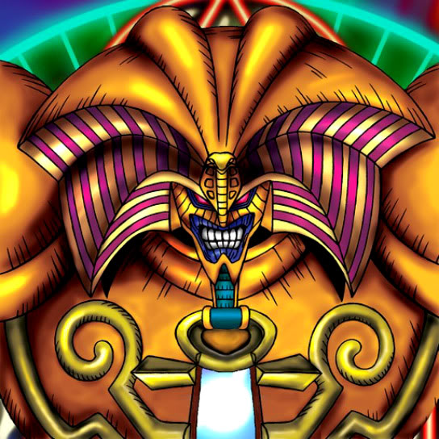

Exodia the Forbidden One

Description: "As Leader, summon the four limbs from your own deck to adjacent Summoning Areas, and enter your next turn face-up without being spellbound and victory is yours."
STATS
ATK: 1000
DEF: 1000DECK COST
Deck Cost per Card: 25EFFECT NOT IMPLEMENTED
Fusion List (2 Possible Fusions)
- Exodia the Forbidden One + Celtic Guardian = Dark Elf
- Exodia the Forbidden One + The 13th Grave = Magical Ghost